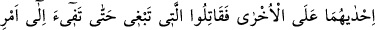
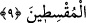

9. Eğer müminlerden iki gurup birbirleriyle vuruşurlarsa aralarını düzeltin. Şayet
biri ötekine saldırırsa, Allah’ın buyruğuna dönünceye kadar saldıran tarafla
savaşın. Eğer dönerse artık aralarını adaletle düzeltin ve (her işte) adaletli
davranın. Şüphesiz ki Allah, âdil davrananları sever.
Bu âyette tesniye-müennes sigası yerine cemi sigası kullanılmıştır. Çünkü her taife
cemidir. Âyette kullanılan ‘taife’ kelimesi insan topluluğu demektir. Ancak tâife
‘fırka’dan farklıdır. Nitekim “onların her kesiminden bir grup” (Tevbe 9/122) âyet-i
kerimesi buna delildir. Âyetteki (__WORD__) ifadesi vücuben mahzuf bir fiilin failidir;
mübteda değildir. Çünkü şart edatı ancak fiilin başına gelir. Fiil lafzî veya takdîrî
olabilir. Takdîr şöyledir: (
) müfessir ve müfesser bir arada
zikrolunmasın diye ilk (__WORD__) hazfolunmuştur. ‘Katl’ esas olarak ruhu cesedden izâle
etmek demektir.
Salâh, istikametli ve faydalı hâle ulaşmak demektir. Islâh ise bir şeyi bu hâle
ulaştırmak anlamındadır. Âyetin mânâsı şudur: Bu iki taifenin arasını nasihat ve
Allah’ın hükmüne davetle düzeltin.
Ömer b. Abdülaziz (rh.a.) şöyle der: Kim bir kardeşine dini ile ilgili nasihat eder ve
dünyasının salâhı için çabalarsa sılasını güzel yapmış olur.
Mutarrif şöyle der: Kulların Allah’a karşı en samimisinin melekler, en sahtekârının
ise şeytanlar olduğunu gördük. Denilir ki: Kim sultana nasihatini, tabibe hastalığını,
ihvanına derdini gizlerse kendi nefsine hıyanet etmiş olur. İnsanların arası bozulduğunda
aralarını düzeltmek en büyük ibadet ve en yüce taatlerdendir. Yine mazluma yardım
etmek de böyledir.
Hadîs-i şerif’te şöyle buyrulur: “Oruç, namaz ve sadakadan derece bakımından
daha üstün olanını söyleyeyim mi? Dediler ki: Evet söyle ya Rasûlallah! O da şöyle
buyurdu: İnsanların arasını düzeltmek.”[178]
Lokman Hekim şöyle der: Yavrucuğum! Şer, şerri söndürür diyen kimse yalan
söylemiştir. Eğer doğru söylüyorsa, iki ateş yaksın bakalım biri öbürünü söndürecek
mi? Ateşi ancak su söndürür.
Hadiste şöyle buyrulur: “Müslüman müslümanın kardeşidir, ona zulmetmez, onu
yarı yolda bırakmaz, onu ayıplamaz, kardeşinin müsadesi olmadan yüksek bina yapıp
rüzgârını kesmez, onun kadrini düşürerek ona eziyet etmez; çocuklarına meyve alır;
çocukları da komşu çocuklarının yanına gidip onlara o meyveden yedirmeme